📄 README.md
· profile


##~/sobre
Desenvolvedor web com foco em sistemas e automação. Gosto de pegar um processo manual, quebrar em partes e devolver ele rodando sozinho — com uma interface decente por cima.
Trabalho de ponta a ponta: front-end em React/Next.js com TypeScript, back-end em Node.js, C#/.NET e Python, autenticação com NextAuth v5 e automações orquestradas com n8n e agentes de IA.
$ whoami dev web · sistemas · automação $ uptime online, construindo e quebrando coisas em ambiente controlado
##~/o-que-eu-faço
| Área | Entrega |
|---|---|
| Web apps | Interfaces em React e Next.js com TypeScript, Tailwind CSS e estado previsível com Zustand. |
| Sistemas | APIs, integrações e serviços em Node.js, C#/.NET e Python — além de automação industrial com Ladder. |
| IA & Automação | Agentes e chatbots com Claude, fluxos no n8n, prompt engineering e dados de série temporal no InfluxDB. |
##~/stack
Front-end
Back-end
IA & Automação
Banco de dados
##~/stats
github-readme-statsestatísticas gerais
(carregado no GitHub)
(carregado no GitHub)
top-langslinguagens mais usadas
(carregado no GitHub)
(carregado no GitHub)
##~/projetos
Os projetos em destaque estão fixados no perfil — é lá que ficam os repositórios que melhor representam o que eu construo.